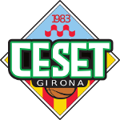

CESET U17 VERD
Dades disponibles abans de la jornada 7. Les dades individuals disponibles corresponen als tres primers partits amb acta estadística.
Classificació
4t
Balanç
2-3
PF/P
49.8
PC/P
59.2
DIF/P
−9.4
Anàlisi del rival · Temporada 26-27
Diumenge 18 d’octubre · 10:45 · Pavelló La Colina.

Dades disponibles abans de la jornada 7. Les dades individuals disponibles corresponen als tres primers partits amb acta estadística.
Classificació a la jornada 7, abans de JBF–CESET.
| # | Equip | J | G | P | PF | PC | Pts |
|---|---|---|---|---|---|---|---|
| 1 | NAYOX FORÇA LLEIDA B | 5 | 5 | 0 | 355 | 215 | 10 |
| 2 | TGN BÀSQUET F10A | 6 | 4 | 2 | 385 | 334 | 10 |
| 3 | CB BLANES A | 5 | 5 | 0 | 296 | 259 | 10 |
| 4 | CESET U17 VERD | 5 | 2 | 3 | 249 | 296 | 7 |
| 5 | MANTISE CB SANT JOSEP BADALONA - JBF | 4 | 1 | 3 | 225 | 229 | 5 |
| 6 | U. B. LLEFIÀ B | 5 | 0 | 5 | 190 | 313 | 5 |
| 7 | SESE B | 4 | 0 | 4 | 211 | 265 | 4 |
Trajectòria completa dels cinc partits disputats.
| Data | J | Rival | Resultat | DIF |
|---|---|---|---|---|
| 03/10/2026 | J5 · Casa | CB BLANES A | 54-60 | −6 |
| 26/09/2026 | J4 · Fora | U. B. LLEFIÀ B | 53-40 | +13 |
| 20/09/2026 | J3 · Casa | SESE B | 70-58 | +12 |
| 13/09/2026 | J2 · Fora | NAYOX FORÇA LLEIDA B | 31-72 | −41 |
| 06/09/2026 | J1 · Casa | TGN BÀSQUET F10A | 41-66 | −25 |
| 2-3 · 249 PF · 296 PC · −47 Casa: 1-2 (−6.3). Fora: 1-1 (−14.0). | ||||
Després de dues derrotes inicials, van encadenar dues victòries. L’últim partit, 54-60 contra CB Blanes A, va ser competitiu.
Dades acumulades dels cinc partits de la temporada. T2C i T3C són conversions; no es mostren percentatges perquè no hi ha tirs fallats registrats.
| Rival | J | Data | R | PF | PC | DIF | T2C | T3C | TLC | TLI | TL% | FC |
|---|---|---|---|---|---|---|---|---|---|---|---|---|
| vs TGN BÀSQUET F10A | J1 | 06/09/2026 | 41-66 | 41 | 66 | −25 | 17 | 2 | 1 | 6 | 16.7% | 16 |
| @ NAYOX FORÇA LLEIDA B | J2 | 13/09/2026 | 31-72 | 31 | 72 | −41 | 11 | 1 | 6 | 14 | 42.9% | 15 |
| vs SESE B | J3 | 20/09/2026 | 70-58 | 70 | 58 | +12 | 23 | 6 | 6 | 18 | 33.3% | 24 |
| @ U. B. LLEFIÀ B | J4 | 26/09/2026 | 53-40 | 53 | 40 | +13 | 17 | 4 | 7 | 25 | 28.0% | 18 |
| vs CB BLANES A | J5 | 03/10/2026 | 54-60 | 54 | 60 | −6 | 16 | 6 | 4 | 17 | 23.5% | 18 |
| Σ / MITJ. | 49.8 | 59.2 | −9.4 | 16.8 | 3.8 | 4.8 | 16.0 | 28.9% | 18.2 | |||
Mitjanes individuals dels cinc partits disputats. Les cel·les destacades indiquen el valor més alt de l’equip.
| # | Jugadora | PJ | MIN | PTS | T2C | T3C | TLC | TLI | TL% | FC | +/- |
|---|---|---|---|---|---|---|---|---|---|---|---|
| 18 | Clara Lopez Jordi | 5 | 26.1 | 11.6 | 4.6 | 0.6 | 0.6 | 3.0 | 20.0 | 2.0 | +3.4 |
| 2 | Leire Cancelo Pi | 5 | 26.2 | 8.4 | 2.8 | 0.6 | 1.0 | 3.6 | 27.8 | 3.6 | +1.0 |
| 13 | Nelly Krymska Prudkiy | 5 | 21.7 | 7.6 | 1.8 | 1.2 | 0.4 | 1.0 | 40.0 | 1.4 | −12.2 |
| 00 | Mireia Pardos Palahi | 5 | 26.9 | 6.2 | 2.0 | 0.4 | 1.0 | 3.2 | 31.3 | 2.6 | −2.8 |
| 10 | Mariona Pi i Martínez | 5 | 22.7 | 5.4 | 1.4 | 0.6 | 0.8 | 2.6 | 30.8 | 2.6 | −7.2 |
| 23 | Júlia Méndez Franco | 5 | 26.3 | 3.6 | 1.6 | 0.0 | 0.4 | 1.4 | 28.6 | 2.2 | −3.8 |
| 4 | Claudia Ferrer Brao | 5 | 16.2 | 2.8 | 1.0 | 0.2 | 0.2 | 0.4 | 50.0 | 1.0 | −12.4 |
| 8 | Martina Tobed Haro | 5 | 19.4 | 2.4 | 0.8 | 0.2 | 0.2 | 0.4 | 50.0 | 1.0 | −8.4 |
| 5 | Noa Ruiz Bali | 4 | 15.7 | 2.3 | 1.0 | 0.0 | 0.3 | 0.5 | 50.0 | 2.3 | −5.5 |
| 1 | Elsa Rud Pinsach | 1 | 9.3 | 0.0 | 0.0 | 0.0 | 0.0 | 0.0 | 0.0 | 0.0 | −1.0 |
| TOTAL EQUIP | 5 | 200.0 | 49.8 | 16.8 | 3.8 | 4.8 | 16.0 | 30.0 | 18.2 | −9.4 | |
Punts de partida a contrastar amb el vídeo.
El 54-60 contra CB Blanes A confirma que poden sostenir un partit tancat contra un rival de la zona alta.
Les tres principals anotadores disponibles generen sobretot des del 2P. Cal protegir pintura i tancar el rebot defensiu.
Paula Merce, Alicia Farreras i Joana López visiten sovint la línia. Defensar verticals i sense arribar tard.
Paula Merce, Aina Pardo i Alicia Farreras concentren minuts i anotació. Preparar els emparellaments des de l’inici.
Base de treball per l’staff.
Afegeix el vídeo del partit i les conclusions. Es comparteixen amb tot l’staff.
Acumulat dels cinc partits disputats. El registre mostra 103 conversions de camp: 84 tirs de 2 i 19 tirs de 3, per un total de 225 punts des del camp.
La carta només registra tirs anotats (103 de 103). Per això el 100% d’encert i l’EFG% del visor no són indicadors reals: no hi ha tirs fallats carregats.
La producció és principalment interior: 84 de les 103 conversions són de 2 punts. Prioritat per protegir pintura, contenir penetracions i tancar el rebot defensiu.
Mitjanes per partit segons el context, en els cinc partits disputats.
| Context | PJ | V-D | PF/P | PC/P | DIF/P |
|---|---|---|---|---|---|
| Temporada completa | 5 | 2-3 | 49.8 | 59.2 | −9.4 |
| Com a local | 3 | 1-2 | 55.0 | 61.3 | −6.3 |
| Com a visitant | 2 | 1-1 | 42.0 | 56.0 | −14.0 |
| En victòries | 2 | 2-0 | 61.5 | 49.0 | +12.5 |
| En derrotes | 3 | 0-3 | 42.0 | 66.0 | −24.0 |
| Partits trencats (>15) | 2 | 0-2 | 36.0 | 69.0 | −33.0 |
Punts per partit: CESET / rival.
| Quart | PF/P | PC/P | DIF |
|---|---|---|---|
| P1 | 12.5 | 14.7 | −2.2 |
| P2 | 10.7 | 13.4 | −2.7 |
| P3 | 12.0 | 14.1 | −2.1 |
| P4 | 14.4 | 16.5 | −2.1 |
Distribució dels cinc resultats jugats.
| Marge | Partits |
|---|---|
| Derrota >15 | 2 |
| Derrota 6-15 | 1 |
| Derrota 1-5 | 0 |
| Victòria 1-5 | 0 |
| Victòria 6-15 | 2 |
| Victòria >15 | 0 |
Comparació de classificació i rendiment per partit abans de la jornada 7.
| Equip | Pos. | Balanç | PF/P | PC/P | DIF/P |
|---|---|---|---|---|---|
| CESET U17 Verd | 4t | 2-3 | 49.8 | 59.2 | −9.4 |
| JBF | 5è | 1-3 | 56.3 | 57.3 | −1.0 |
Dada fiable perquè sí es registren intents.